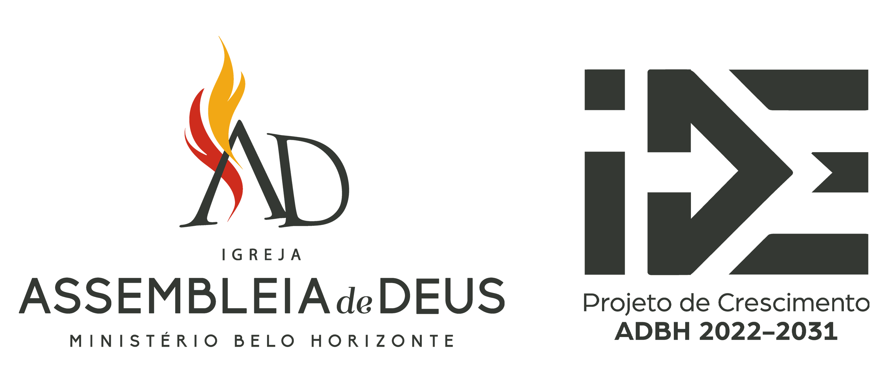
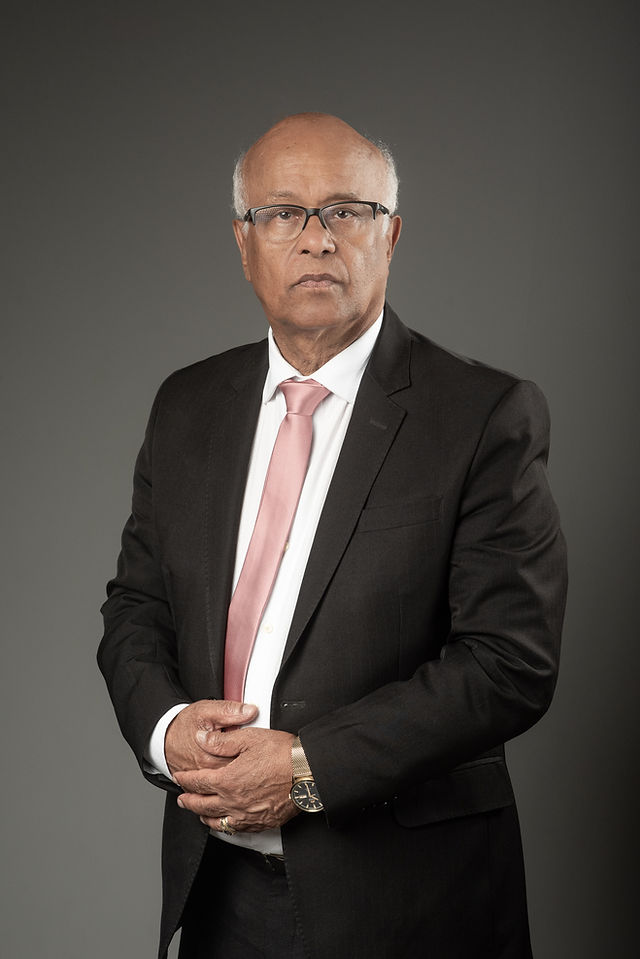
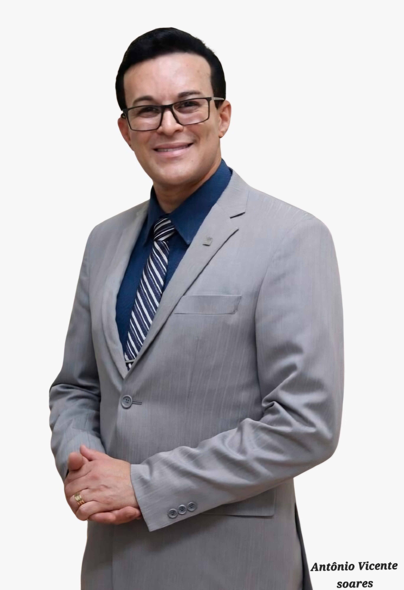
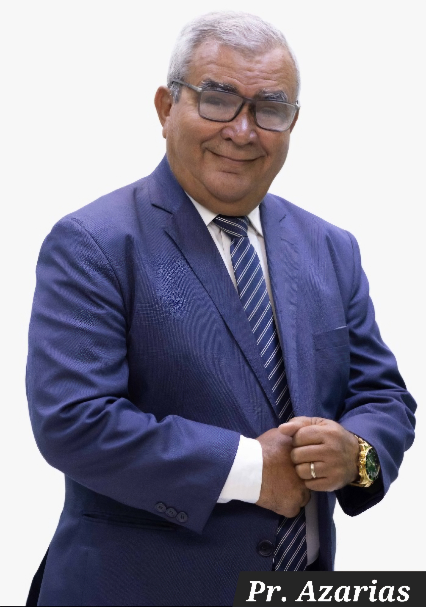
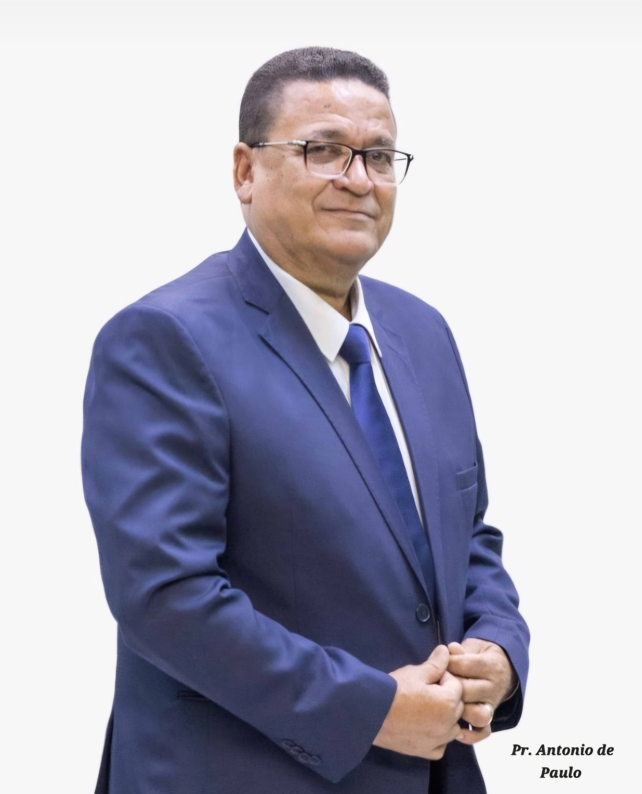

Corpo Docente
Professores
Clique em cada professor para ver o currículo completo.
Regência
Pr. Joel de Amorim
Músico, maestro e pastor. Regente de corais, orquestras e bandas de louvor. Arranjos utilizados em ministérios em todo o Brasil.
Flautas
Miller Moraes
Bacharel em Flauta Transversal pela UFRJ. Integrou a Academia Petrobras Sinfônica, OSB Jovem e realizou apresentações na Alemanha.
Palhetas Duplas
Francisco Silva (Chico)
Fagotista e contrafagotista da Filarmônica de MG. Formado pela Academia da Osesp com aperfeiçoamento internacional.
Clarinetes
Jonatas Fernandes Bueno Costa
Bacharel pela Unesp e Principal Assistente da Filarmônica de MG. Premiado em diversos concursos de solistas e música de câmara.

Saxofones
Diogo Gonçalves
Músico militar da FAB, maestro e pastor. Especialista no desenvolvimento da música instrumental em contextos ministeriais.
Trompetes
Renzo Albierre da Costa
Bacharel pela UFMG. Trompetista da Orquestra Sinfônica de Minas Gerais. Ex-professor do projeto Vallourec e membro do Uai Brass.
Trompas
Brayan dos Anjos
Graduando em Trompa pela UFMG e músico da Banda de Música do Corpo de Bombeiros de MG.
Trombones
Jackson Pires Gonçalves
Bacharel pela UFMG e regente pelo CEFART. Especialista em sopros e regência de orquestra cristã.
Tubas e Eufônios
Elias Antônio da Costa
Graduado pela UEMG. Tubista da OSPMG e Eufonista da Banda da PMMG.
Percussão
Jediael Koitel
Timpanista da OSPMG com carreira internacional (EUA e Escócia). Ex-músico do Exército e Marinha.
Violinos e Violas
Elder Freitas Dias
Bacharel pela UFMG e Sargento da PMMG. Ex-Spalla da Sinfônica do Vale do Aço.
Cellos e Baixos
Leia Paula Gomes de Oliveira Assis
Licenciada pela UEMG (Violoncelo). Experiência na Sinfônica de Betim e Grupo de Câmara do TJMG. Especialista em musicalização.
Base
Gilson da Silva Brito
Violonista erudito, arranjador e concertista. Especialista em educação musical e arranjos para grupos instrumentais.

Formação Pedagógica
Pedagogia da Musicalização Infantil
Didática e metodologias de ensino musical. Foco na capacitação de professores, regentes e líderes de departamentos infantis.
Material Visual
Flyers & Material
Baixe e compartilhe os materiais do EBOEMG 2026.
Flyer Principal
EBOEMG 2026
Programação
Agenda do dia
Oficinas
13 naipes disponíveis
Onde será
Local do Evento
Assembleia de Deus
Templo Central
Rua São Paulo, 1341 — Centro, BH
Informações do Local
LocalAssembleia de Deus
Templo Central
Templo Central
EndereçoRua São Paulo, 1341
Centro — Belo Horizonte / MG
Centro — Belo Horizonte / MG
Data30 de Maio de 2026 — Sábado
Horário13h00 — abertura
21h30 — encerramento
21h30 — encerramento
Fale conosco
Contato
Organização
Realização

Presidente

Presidente
Pr. Paulo Cézar Pereira
AD Ministério Belo Horizonte
Coordenadoria Geral de Música ADBH

Coordenador
Ev. Mto. Antônio Vicente Soares

Coordenador
Pr. Azarias Ramos

Supervisor
Pr. Antônio de Paulo
Organização do Evento
Coordenação
Pb. Elias Antonio da Costa
📱 (31) 98494-0477
Auxiliar
Dc. Celso Cândido de Oliveira
📱 (31) 98533-8073
Secretário(a)
A definir
📱 WhatsApp